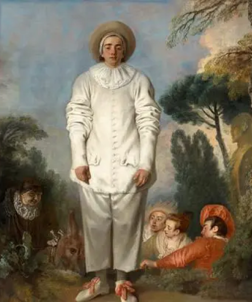
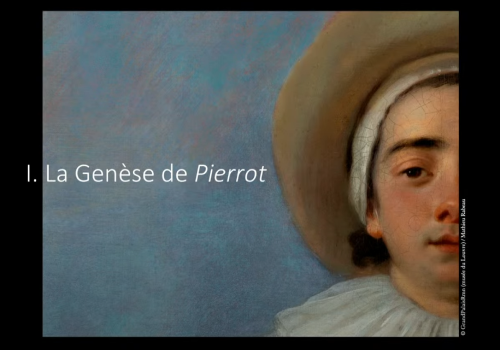
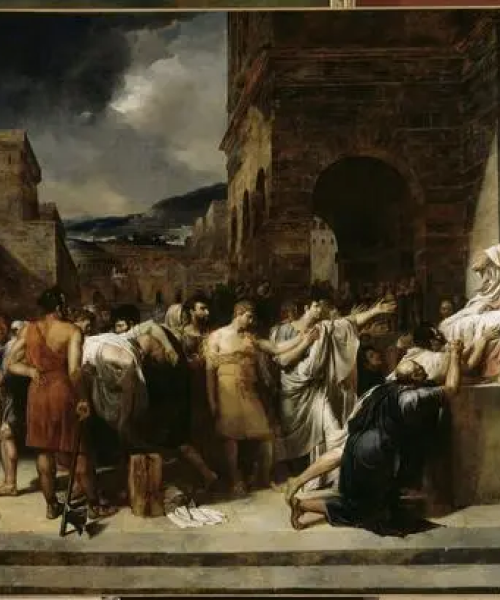
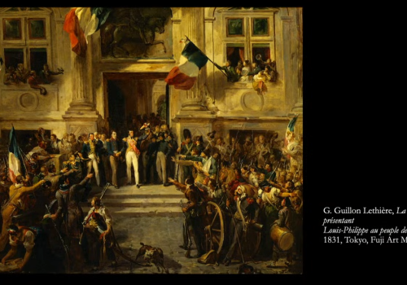

E X H I B I T I O N
- 
-

A new look at Watteau
An actor with no lines: Pierrot, known as Gilles
16 October 2024 - 3 February 2025
"The Louvre's enigmatic painting par excellence."These are the words that the painter and writer Bernard Dufour used to describe Pierrot, long known as Gilles, by Antoine Watteau (1684-1721). Though this strange character, dressed in white from top to toe, cuts a familiar, even iconic figure, this is a work of absolute originality. From its history to its composition, from its format to its iconography, everything about this piece captivates and intrigues. Its origins remain unknown; the first confirmed mention of its existence only dates back to 1826. Interpreting this painting, inspired by the world of theatre and particularly by Pierrot, the most famous comedy character of this period, is also a difficult task.
Thanks to recent conservation work carried out at the Centre for Research and Restoration of Museums of France (C2RMF), which has restored the painting to its former glory, the Musée du Louvre is finally able to give it the monographic exhibition it so richly deserves. The exhibition will explore this mysterious masterpiece, placing it back into the context of theatre life at the start of the 18th century and of the artworks produced by Watteau and his contemporaries. It will also touch on the fascination that Gilles has inspired all the way to the present day, influencing creators of all backgrounds from Fragonard to Picasso to Nadar, from André Derain to Marcel Carné. Each of these painters, authors, actors, photographers and filmmakers made a talented attempt at solving its captivating riddle.
Figures of the Fool
From the Middle Ages to the Romantics
16 October 2024 - 3 February 2025
Fools are everywhere. But are the fools of today the same as the fools of yesteryear? This fall, the Musée du Louvre is dedicating an unprecedented exhibition to the myriad figures of the fool, which permeated the pictorial landscape of the 13th to the 16th centuries. Over the course of the Middle Ages and the Renaissance, the fool came to occupy every available artistic space, insinuating himself into illuminated manuscripts, printed books and engravings, tapestries, paintings, sculptures, and all manner of objects both precious and mundane. His fascinating, perplexing and subversive figure loomed large in the turmoil of an era not so different from our own. The exhibition examines the omnipresence of fools in Western art and culture at the end of the Middle Ages, and attempts to parse the meaning of these figures, who would seem to play a key role in the advent of modernity.
Within the newly renovated Hall Napoléon, this exhibition, which brings together over 300 works from 90 French, European and American institutions, brings us on a one-of-a-kind journey through Northern European art (English, Flemish, Germanic, and above all French), illuminating the profane aspects of the Middle Ages and revealing a fascinating era of surprising complexity.
- 
-

Guillon-Lethière, "born in Guadeloupe"
13 November 2024 - 17 February 2025
This show, co-organised by the Clark Art Institute in Williamstown (Massachusetts) and the Musée du Louvre, will be the first major monographic exhibition on an artist who has largely faded from view but was counted among the 'great authorities of his day' (Charles Blanc). Guillaume Guillon-Lethière was born in Guadeloupe. His mother was a freed slave of African origin, his father a white French royal official. Guillaume studied first in Rouen and then in Paris during the ancien régime and went on to enjoy a brilliant career: director of the French Academy in Rome (1807-1816), elected member of the Institut de France in 1818 and professor at the École des Beaux-Arts from 1819 onwards. He was also a great collector and artistic advisor to Lucien Bonaparte. His artwork reflects his experience of the political upheaval of the period and the succession of political regimes in France from the Revolution to the July Monarchy.
Most of his paintings and drawings focus on ancient history. He began his career in a period dominated by the neoclassical style of Jacques-Louis David; his continuation in the classical vein led to his fall from favour in the late 1820s, as the upcoming generation of Romantic artists began taking over. The Louvre's collection includes two huge paintings by Guillon-Lethière, both measuring almost eight metres in width and inspired by classical heroism: Brutus Condemning his Sons to Death, finished in Rome in 1811, and The Death of Virginia(1828).